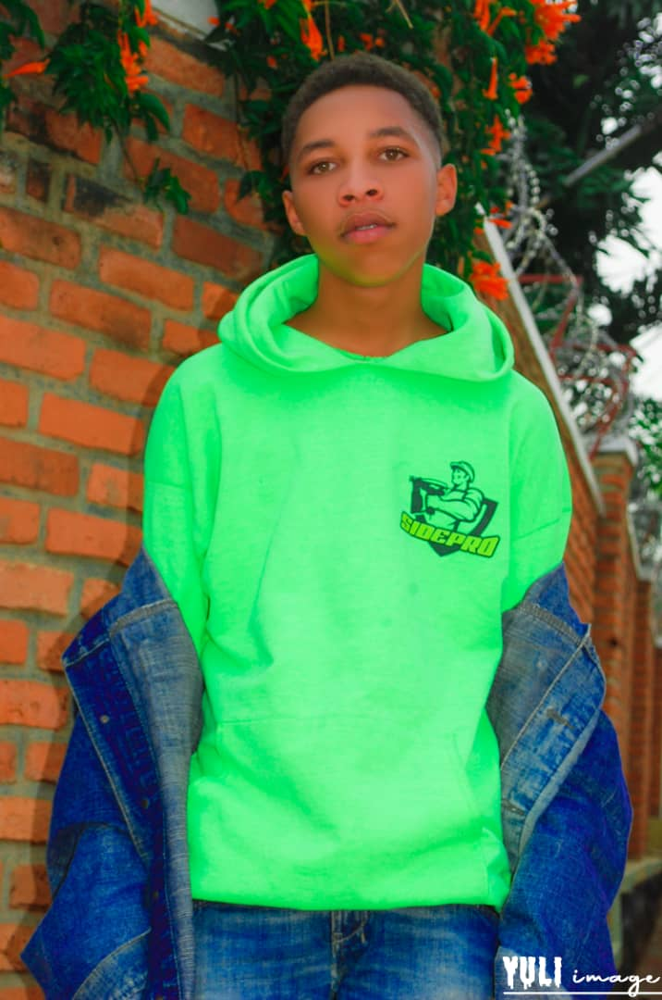

About Me - NIYONKURU Aime Bonheur

I am NIYONKURU Aime Bonheur, a high-level student studying Mathematics, Physics, and Computer Science. I live in Kigali City, Nyarugenge District. I have a passion for learning and am highly dedicated to my studies.
I started my educational journey at APACE Primary School in Nyarugenge District. This early education laid a strong foundation for my academic pursuits. I am constantly seeking knowledge and exploring new ideas.

Computer Science has captured my interest, and I am fascinated by its complexities and possibilities. I am continually expanding my skills and exploring innovative ideas in this field.
I believe that intelligence is not only about knowledge but also about critical thinking and problem-solving. I strive to develop these skills to approach challenges with creativity and innovation.
Thank you for visiting my webpage. I am excited to share my ideas and contribute to the world of Mathematics, Physics, and Computer Science.
Contact
If you would like to get in touch with me, please feel free to email me:
Email: Bonheuraime8@gmail.com
Phone: +250787072399